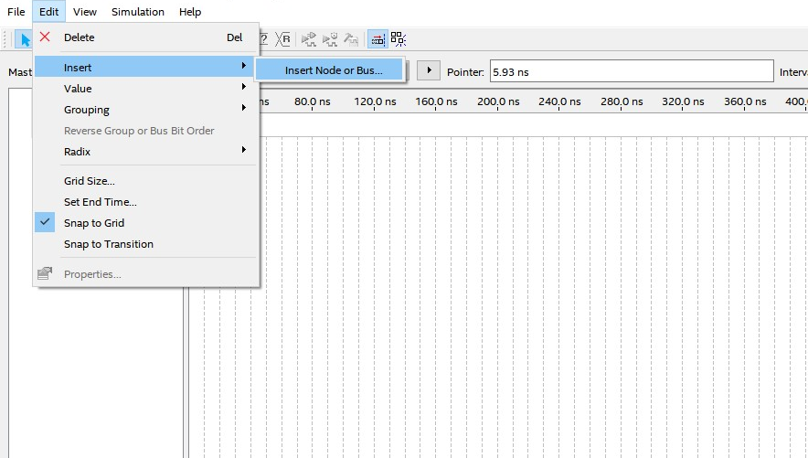
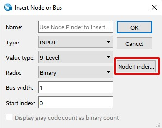
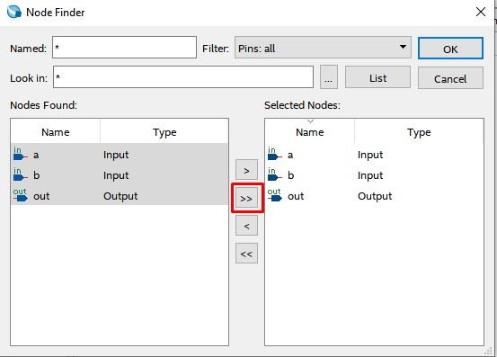
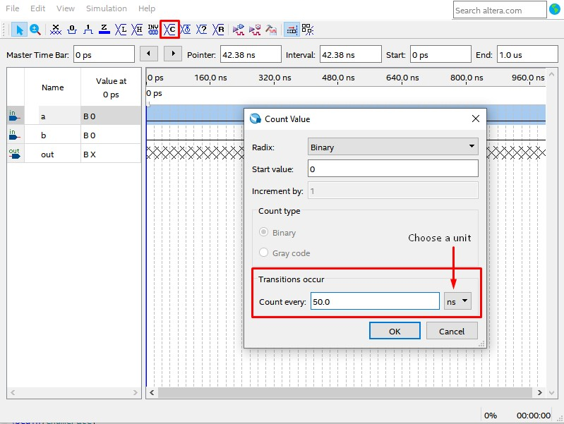
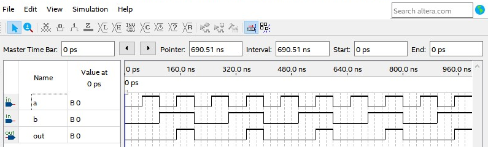
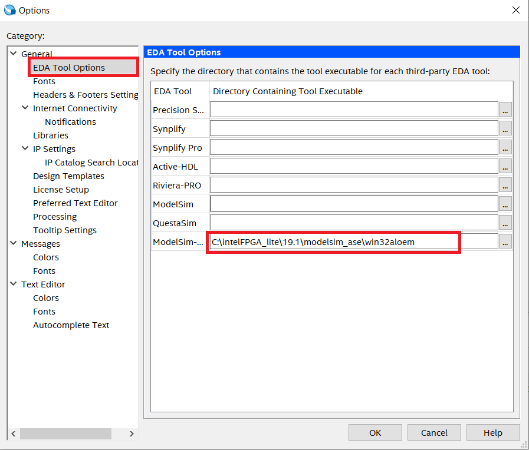
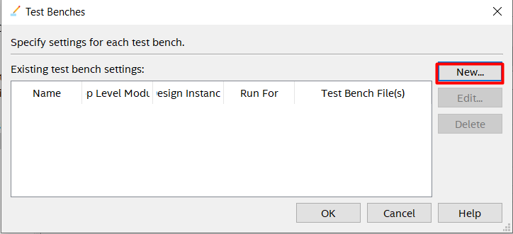
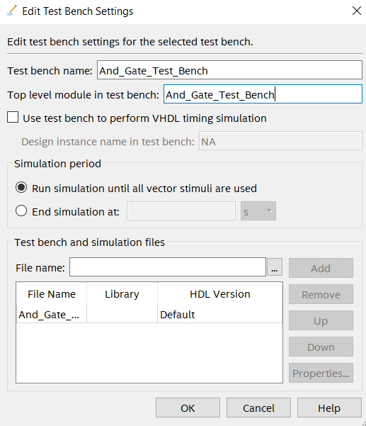
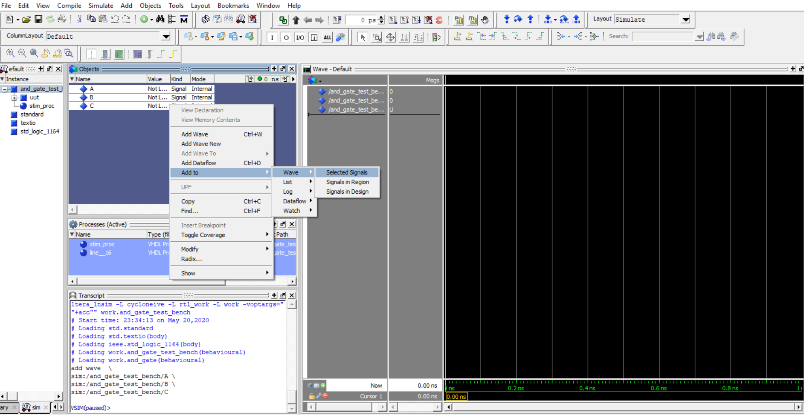
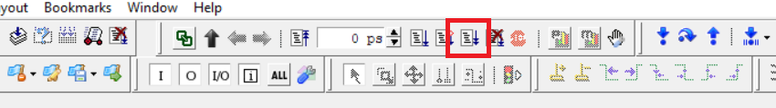

4. Verifying Installation
You can perform functional and timing simulation of design by using EDA simulation tools. We can simulate the design by two methods. These two methods are explained briefly below:
- In the first method we set each input A and B manually and run the simulation to get the output C.
- In the second method, write a test bench file using Verilog HDL to simulate design in ModelSim.
1. Without TestBench
- Click on File→New→University Program VWF.
- In the New window, Go to Edit→Insert→Insert Node or Bus.
- Click on Node Finder, in the New Window, Click on List.
Click on the highlighted button to add all the Nodes. Now Click on OK and then OK again.
Choose Input A and specify its value by choosing any of the options that are highlighted.
For example, to give the Clock pulse to A input, select the node, then Click on the Count Value button highlighted at the top in the below figure, and then specify the Clock Pulse of frequency 50ns.
-
Similarly, specify the input pattern for input B with Clock Pulse of frequency 100ns and then Click on the Simulate Icon. If a save prompt appears, then save the file. Do not change the file name and also do not change its location. By default file name will be Waveform.vwf and it will be stored by default in the project folder. Once the simulation process completes, the waveform will be displayed. This is the waveform before the simulation starts.




Note : For our design a = A, b = B and out = C.



This is the waveform after the simulation ends.

2. With Testbench and NativeLink
Altera Quartus II software allows user to launch Modelsim-Altera simulator from within the software using the Quartus II feature called NativeLink. It facilitates the process of simulation by providing an easy to use mechanism and precompiled libraries for simulation.
Create a new Verilog HDL. Add the testbench code and then save it in the same project directory (AND_GATE project). Verilog HDL test bench code is provided below.
- Specify the path to Modelsim Altera
- Go to the menu Tools → Options
- In the General category, Select EDA Tool Options.
- A dialogue box appears, where you can specify the path of Modelsim-Altera executable file. And Click OK.
- NativeLink Settings to configure Modelsim-Altera
- Go to the menu Assignments → Settings.
- Under EDA Tool Settings → Simulation. The dialogue box for simulation appears.
- For Tool Name, Choose Modelsim-Altera.
- Select Verilog as the Format for Output Netlist.
- Select simulation/modelsim as the Output Directory.
- Under NativeLink Settings, Choose Compile Test Bench → Test Benches. All these changes are indicated in the below figure.
- A new window appears Select New.
- Another window appears with the name New Test Bench Settings.
- Enter the Test Bench Name and Top Level Module in test bench as shown below. For both it should be "And_Gate_Test_Bench"
- Add the Test Bench File(And_Gate_Test_Bench.v) that we created above in the previous section and then click OK. To add the testbench file Click on 3 dots → Select the file → Click on Add

Below is the Verilog HDL Test Bench Code for AND gate
// Verilog Test Bench code for AND gate
module And_Gate_Test_Bench ;
reg A;reg B;
wire C ;
// Defining unit under test i.e AND_GATE
AND_GATE uut (.A(A) ,.B(B) ,. C(C));
// Assigning all possible states for input A and B
initial begin
A = 0; B = 0; #100;
A = 0; B = 1; #100;
A = 1; B = 0; #100;
A = 1; B = 1; #100;
end
endmodule
Save the file with correct name (same as module name i.e. And_Gate_Test_Bench) and correct file extension, for Verilog HDL it is .v and then click on Save.





2.1 Functional Simulation using NativeLink Feature:
Goto menu Processing →Start→Start Analysis & Elaboration. After this Click on Processing →Start→Start Analysis & Synthesis on the same drop box. These step checks the error and collects all file name information and builds the design hierarchy for simulation.
- Go to menu Tools → Run Simulation Tool → RTL Simulation. It & automatically run EDA simulator (ModelSim-Altera) and compiles all necessary design files.
Finally ModelSim-Altera tool opens and you can view the waveforms. If waveforms do not appear then continue the steps.
In the Toolbar Click on Simulate→Start Simulation then a window will pop-up Add the Test bench file as shown in the below figure.
- Start the simulation by clicking on the Run All button in Toolbar.
- Navigating the simulation At this point you should have successfully run the simulation, but the waveform window is rather small and hard to see. We can move around in the simulation and see the value of the signals. Look for the cursor, a yellow vertical line in the waveform viewer, with the time in yellow at the bottom. You can use this line to move left or right in the waveform viewer and also zoom-in and zoom-out.
- Move the yellow vertical line across each set of inputs and output in the waveform, so that you can see the level of each signal and compare them with the truth table of the AND gate.
- By doing this you will notice that when both the inputs are high then only output is high or else it is low. which is actual logic for AND gate.
- Follow this procedure for each experiment you perform to verify your design.


Add the I/O pins as shown in the below image. Select all the signals(A,B and C) and add it to ’wave’ section.

